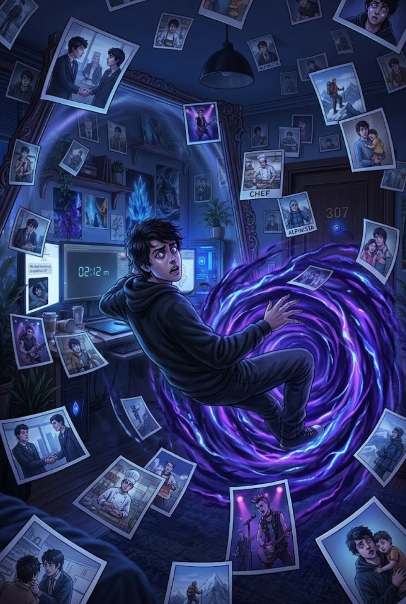

1/3
Camino actual: La Red del Tiempo
🔊 Narración:
Al abrir la puerta de golpe, es absorbido hacia una réplica de su cuarto llena de fotos que muestran sus decisiones en realidades paralelas.
Un teléfono antiguo suena. Una entidad le explica que está en un nexo temporal a punto de colapsar por su imprudencia.
♦ ───── ♦